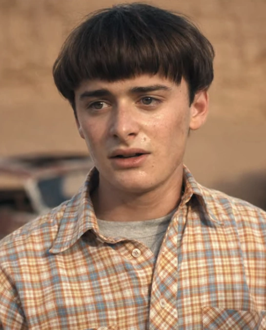
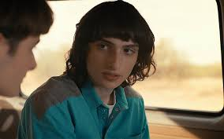
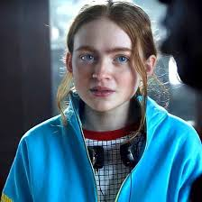

Uso de listas
Brisa riffo
1.1- ¿Para qué sirve la etiqueta ul? Dar un ejemplo en donde lo utilizarías.
ul define una lista desordenada. El elemento contiene uno o más elementos li que especifican los ítems de la lista.la podemos utilizar para hacer una lista de frutas
1.2- ¿Para qué sirve la etiqueta ol? Dar un ejemplo en donde lo utilizarías.
la etiqueta ol sirve para definir y mantener ordenada una lista.un ejemplo donde se podra utilizar seria para hacer peliculas .
1.3- ¿Para qué sirve la etiqueta dl? Dar un ejemplo en donde lo utilizarías.
la etiqueta dl sirve para especificar una lista de definiciones,un ejemplo de esta etiqueta es un diccionario.
1.4- ¿Para qué sirve la etiqueta li? Dar un ejemplo en donde lo utilizarías.
la etiqueta li sirve para declarar cada uno de los elementos de una lista,
1.5- Crea una lista desordenada con tres elementos (li) que contengan nombres de países de América del Sur.
1.6- Crea una lista ordenada con cinco elementos (li) que contengan los días de la semana en orden alfabético.
- Lunes
- Martes
- Miercoles
- Jueves
- Viernes
1.7- Anida una lista desordenada dentro de otro elemento li de otra lista desordenada para crear una lista anidada de frutas y verduras.
- frutas
- manzana
- Mandarina
- Cereza
- Uva
- Banana
- Sandia
- Frutilla
Verduras
- Zanaoria
- Lechuga
- Acelga
- Papa
- Choclo
- Espinaca
1.8- Crea una lista ordenada, respetando las negritas y el subrayado, que contenga los siguientes pasos para hacer una tarta de manzana: a) Pelar y cortar las manzanas en rodajas finas. b) Mezclar la canela, el azúcar y la harina en un tazón. c) Colocar la masa de la tarta en un molde para horno. d) Colocar las manzanas sobre la masa de la tarta. e) Hornear la tarta durante 45 minutos.
- pelarycortarlasmanzanas en rodajas finas.
- colocarla canela,elazucar y la harina en un tazon.
- colocar la masa de la tartaen un molde para horno.
- colocar las manzanassobre la mesa de la tarta.
- hornear la tarta durante 45 minutos.
1.9- Existe un atributo que se aplica a la etiqueta ol para ver la lista en orden descendente en vez de ascendente, ¿cuál es ese atributo? Utilizar la referencia de atributos de HTML https://developer.mozilla.org/es/docs/Web/HTML/Attributes
Este atributo se llama reversed y Indica si la lista debe ser mostrada en orden descendente en vez de ascendente.
1.10- Utilizando el atributo anterior, crear una lista con cuatro elementos que contengan nombres de películas de terror de forma descendente
reversed
- el conjuro
- el exorcista
- sonrie
- la noche del demonio
1.11 Elegir un gusto particular y realizar una lista descriptiva de por lo menos 5 elementos. El título debe tener un enlace que lleve a un sitio de referencia. Utilizar en las descripciones etiquetas: strong, em, img.
Stranger things
- Once
- Once
es una niña extraña que tiene poderes porque es participante de los experimentos de un proyecto, es un la protagonista de la serie original de Netflix, Stranger Things.

Will
- will es el hermano menor de Jonathan Byersy el hijo de Joycetambien personajes de Stranger Things,es un niño timido, en la primera temporada es desaparecido en el bosque de Hawkins

Mike
- Mike es el hijo del medio,un niño con muchos amigos,amigo de will,su juego favorito es dungeons y dragons,siempre usa su bicicleta.

Max
- Maxes una chica nueva en Hawkins,ella se convierte en amiga de mike y sus amigos,se hace mejor amiga de Once,en la ultima temporada persegirla vecna queda en coma.

Vecna
- Henry Creel,tambien conocido como Vecna es uno de los "villanos" de Stranger Things,el desaparecio en una dimencion alternativa cuando era niño donde obtuvo poderes, ahi el es llamado 001 y se convierte finalmente en el tenebroso Vecna.